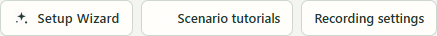
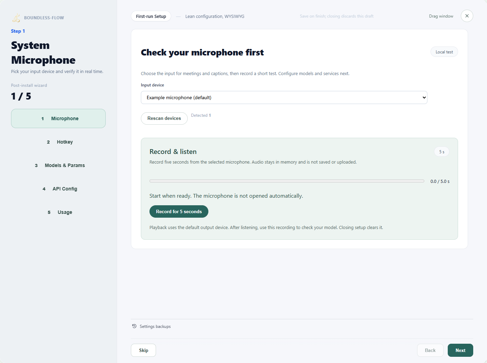
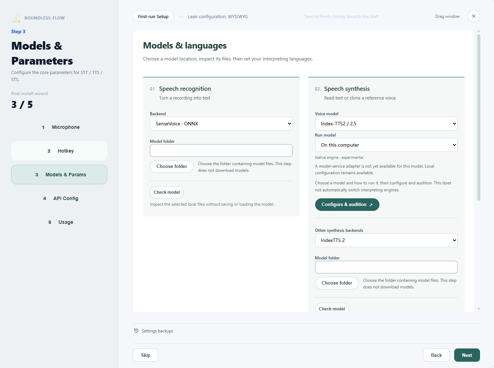
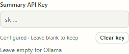
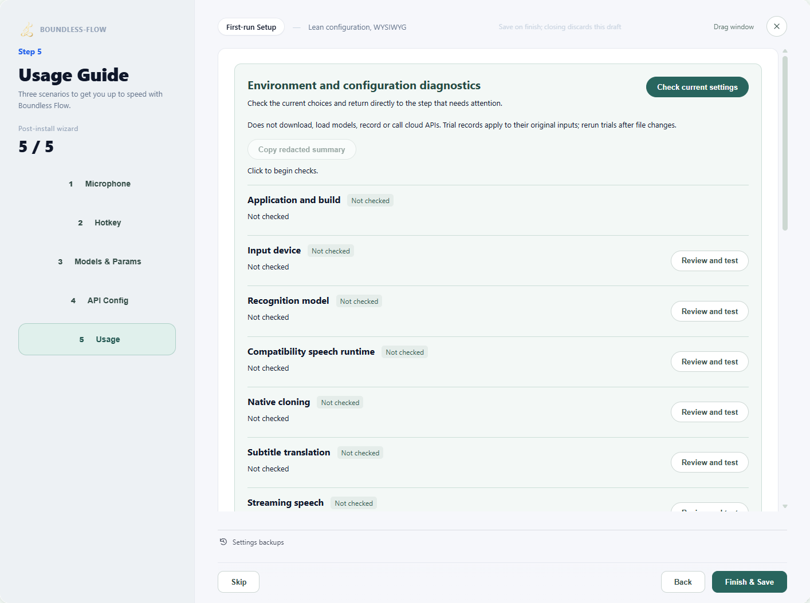

Scenario guide
First use: installation and setup
Get your own voice transcribed first, then add translation, minutes or cloning.
What you will get
Finish a short recording, see its transcript and save reusable settings.
Before you start
- A Windows desktop, working microphone and headphones. Mobile apps are not available in this version.
- Keep the app and companion components together. The signed installer is not yet released; use the complete supplied evaluation build, rather than copying a lone executable or running development scripts.
- Local transcription requires a matching recognition model. Cloud translation or minutes additionally need an endpoint, available model and API key.
Step by step
- 01
Open the complete app
Run the supplied Windows installer, choose a destination and finish installation. Open Boundless Flow from the desktop or Start menu and check that the main window shows 0.5.0. Model weights are not included; select models you have downloaded in Setup guide, or configure an API. If Microsoft Edge WebView2 Runtime is missing, install that prerequisite before retrying. Return to an existing instance instead of repeatedly launching another. Leave interpretation off for this first test. Newer versions provide Scenario guides for task-based instructions; opening them does not change settings.

Actual app UI · Select to enlarge; example data is not your result - 1Open tutorials by task without changing settings.
- 02
Select Setup Wizard and test the microphone
Select an Input device, click Record for 5 seconds and say a short sentence. Click Load playback afterward, then play the recording and check that it is clear. Select Use this recording to check the model. If playback is silent, check Windows microphone permission, the device and input volume. Hearing a remote participant does not prove this input records them.

Actual app UI · Select to enlarge; example data is not your result - 1Select the input device you use.
- 2Record a short sample and listen to check the input.
- 03
Set the shortcut and recognition model
Check or set the shortcut, then open Models & Params and select the recognition route and required model folder or file. After inspecting the files, expand Try transcribing a recording. If your recording is not selected, click Use the five-second test recording, then Start test. Check that the text matches your speech; an empty result does not verify recognition. Test again after changing the model, language or recording. Configure transcription alone first.

Actual app UI · Select to enlarge; example data is not your result - 1Open models and parameters.
- 2Open voice-model setup and audition.
- 04
Configure a service if you need translation
Search for the required provider in API settings, enter its real endpoint, model and authentication, and enable it. Select it for translation, enter a test sentence and target language, then click Start translation. Saving settings does not validate the API. Skip translation if you do not need it yet.
When API Key shows “Configured”, leave the password field blank to keep the saved key. To replace it, enter a new key and save. To remove it, click “Clear key”. If saving fails, your entry remains available for retry. Saved meeting reports can use shared or separate settings; both are retained independently.

A saved key leaves the password field blank. Use “Clear key” to remove it. 
Actual app UI · Select to enlarge; example data is not your result - 1Select a configured translation service.
- 2Enter a short passage to test.
- 3Choose the target language.
- 4Run the test after entering valid settings.
- 05
Finish and save, then try transcription
Finish the wizard to save. Closing it discards unsaved changes. Return to Live subtitles, click Start, speak one complete sentence and click Stop. Verify the transcript before adding other features.

Actual app UI · Select to enlarge; example data is not your result - 1Finish setup to save; closing discards unsaved changes.


How to verify success
Your test recording is audible, the matching transcript appears after stopping, and saved settings remain when reopened.
If something goes wrong
App will not open / missing component
Close running Boundless Flow instances and rerun the installer to repair components. A model folder or development command is not an app installation. Uninstalling preserves user settings, recordings and external models.
No transcript
Listen to the microphone test first, then inspect the recognition model. Diagnose input and model problems separately.
Changes did not persist
Reopen the wizard and finish its final save step. Closing does not save the draft.